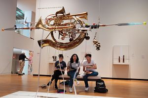

Welcome!
The Academic Success Team at UMSI is dedicated to supporting students inside and outside of the classroom. This site is dedicated to connecting students to tutoring and academic support resources. Resources covered on this site include:
- UMSI Peer Tutoring
- Additional Academic Support Resources
- Link to the Peer-to-Peer Tutor Directory

UMSI Peer Tutoring Program
In partnership with our UMSI faculty, the UMSI Peer Tutoring program is an opportunity for UMSI students and students taking UMSI courses to engage with peer tutors and receive assistance and support in UMSI courses. For more information regarding student support and tutoring, please email umsi.academicsuccess@umich.edu.
